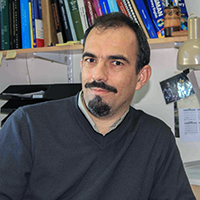

Manuel Pulido
Data Assimilation Research Centre
University of Reading, UK
On leave of absence from the
Universidad Nacional del Nordeste (Argentina)
Research Interests
Data assimilation (4dVar, EnKF and PFs).
Physical subgrid-scale parameterizations.
Atmospheric gravity waves.
Climate model development.
Further information
List of publications
List of presentations
Statement of research and projects
Bio
Most significant responsabilities
Elected member. ICMA-IUGG International commission of Middle Atmosphere International Union of Geophysics and Geodesics 2015-2023.
Elected Member. SPARC Scientific Steering Group of the World Climate Research Program . From 1/1/2011-31/12/2013.
Head of the Department of Physics. Exact Science School. Universidad Nacional del Nordeste 4/2015-5/2017.
One of the core members in the gravity wave momentum budget initiative (WCRP, SPARC) October, 2007-onwards.
Director of the PhD in Physics. Universidad Nacional del Nordeste (2013-2017).
Co-chair Earth Atmosphere Sciences Comission, ANPCyT, Ministry of Science, Argentina (2010).
PI CECONEA - UNNE high performance computer centre
Program committee - AGU Chapman Conference: Atmospheric Gravity Waves and Their Effects on General Circulation and Climate. Feb 2011. Honolulu, Hawaii (USA).
Scientific Committee. CLIVAR VAMOS Workshop on Modeling and Predicting Climate in the Americas. 4-6 June 2012. Petropolis, Brasil.
Scientific Committee. Workshop on Gravity Wave Dynamics and Interactions between Gravity Waves and Turbulence in the ABL. 18-22 July 2012, NCAR, Boulder Colorado (USA).
Invited speaker. Exploring the use of data assimilation methods for the detection and attribution of climate change (DADA) workshop. October 15-18,2012. Buenos Aires (Argentina).
Organizing Committee. A regional WCRP/SPARC Workshop with focus on the Southern Hemisphere and South America. November 26-27 , 2012. Buenos Aires (Argentina).
Invited speaker. XIX Conference on Nonequilibrium Statistical Mechanics and Nonlinear Physics (Medyfinol 2016). Valdivia Chile. 5-9 Dec 2016.
Keynote speaker. ISDA 2018. 6th International Symposium of Data Assimilation. Munich, Germany. 5-9 March 2018.
Contact
Room 1U25
Department of Meteorology
University of Reading
PO Box 243 Reading RG6 6BB, UK
+44 (0)118 378 8951